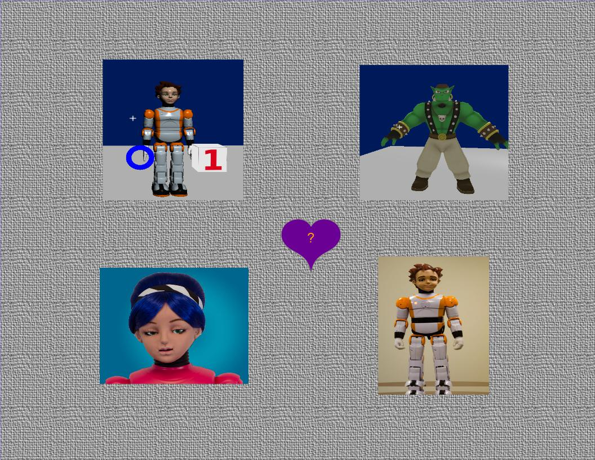

Welcome to Glue.AI
Open source software for social robots
Glue.AI is an open source toolbox of software and specifications used to build social robotics systems, and other systems.
You can use it to make engaging robot characters, running inside both actual robot hardware, and computer simulations.
Each character may use a broad combination of physical, verbal, and musical features, which can evolve over time in complex,
fun, and exciting ways!

(Zeno and Alice images are Copyright RoboKind Robots, used by permission)
Key Feature Sets
Fun and useful things our characters like to do:
- Move - expressively, purposefully, naturally
- See - people, objects, motion, expressions, gestures
- Speak - in a variety of voices and languages
- Listen - to speech, music, and other sounds
- React and Interact - physically and verbally
- Sing and Dance - improvisationally, from memory, and by ear
- Teach, Learn, and Play
- Behave, Intend, Consider, Emote, and Remember
Platform Design
Core strategic open platforms
More than anything else, the glue.ai software is a combination of existing open source components to provide useful results.
As of 2016, the core components are:
- Type schema and config: RDF
- Functional async computing: Scala, akka.io, spray.io
- Network interop: AMQP and HTTP
The kernel of our glue.ai software is now (2016) also being used for a variety of
applications outside of character performance, including large dataset
analysis and visualization.
For more info see Glue.ai Kernel.
Back to explaining the original purpose and structure:
Running such characters requires a lot of software and data. Rather than invent all the pieces ourselves, we bring together existing
open source software and data standards to make life easier for everyone. We also divide Glue.AI itself into a number of separate
pieces, so that our users can each choose just the pieces they need for their own applications. Each of the subproject-layers you
find in our materials also have their own websites, wikis, subversion source code trees, and binary releases in sonatype repositories.
Primary Layers
We deploy our most useful features by embedding configured instances of the following layers directly into a single embedded or desktop
Java VM, to yield a set of characters (usually one is primary) and applications. These characters and apps combine natural-UI
interaction (speech and hearing, visual communication, touch sensing and gestures) with physical and virtual characters, as well
as web / mobile application features.
As with many open source efforts, each of these websites lags behind our current working feature status (which you can
review in our public subversion trees, and in sonatype binary repositories, and our moribund discussion groups), but with
your help, they eventually catch up.
Here are the layers listed in order of approximate importance and completeness (most important and complete are listed first),
as of
August 2014:
- MechIO.org - Robot device capabilities abstraction layer, speaks AMQP ; impl in java + portable native code.
- Appdapter.org - Data management using RDF graphs and symbolic math expressions ; impl in scala + java.
- Cogchar.org - Character behavioral state and data routing framework, speaks HTTP and AMQP ; impl in scala + java.
(Historically, Cogchar has also contained 3D avatar features, which are now moving to HeadySpace.org).
- JFlux.org - Service binding and discovery using OSGi ; impl in java.
- Friendularity.org - Experimental plugins and utilities, and demo/test launch harnesses ; impl in java.
- RWShop.org - Workshop IDE for student developers, based on Netbeans platform ; impl in java.
The diagrams below provide a quick visual introduction to Glue.AI vocabulary and structure, in some typical scenarios.
System context/vocabulary diagram, mostly sans connectors, accounting for physical and virtual characters in a variety of deployment kinds.

(Click diagram to enlarge)
|
Process dataflow and threading view of a typical Glue.AI character deployment.

(Click diagram to embiggen)
|
Supplementary Layers
These layers are still in an initial development status.
But they can already be useful, as examples of how to start your own Glue-AI compatible project.
- HeadySpace.org - renaming target for our 3D virtual-world code, inbound from Cogchar.
- Freckler.org - renaming target for our vision and perception code, inbound from Friendularity.
- StoryChat.org - Authorable state-machine AI plays integrated stories, games, and chatty behaviors,
incorporating Interactive Fiction,
and AIML 2.0-compatible chat expressions.
- SemPlex .org +.net - (website pending) - Cognitive-AI tools used on desktops and servers.
Combined View of All Materials
All our materials are hosted in a regular pattern at Assembla.com, in projects of the "glue" portfolio, which looks better when your
browser is logged in to Assembla:
This orderly layering of downloadable, releasable, updatable Java bundles is a primary benefit of our architecture and infrastructure.
Integration Data Forms, Message Channels, and APIs
- External integration with Glue.AI is done using HTTP, AMQP, RDF, SPARQL and other open, standardized protocols and formats.
- Since Glue.AI is based on open source Java and OSGi, you can make a custom JVM deployment using a selection of your
bundles combined with Glue.AI bundles and others.
- This kind of integration has never been cleaner or more productive than what Java, OSGi and Maven allow for today.
What similar open source robot/character projects are most comparable to Glue.AI?
We have no affiliation with these projects, however our software is to some extent
compatible with all of them, and that compatibility is an explicit goal of our effort.
We present them here as suggested frameworks for comparison and potential custom combination
with Glue.AI in your own environment.
- SmartBody - Native code BML realizer for virtual humans
- YARP - A tidy portable humanoid robotics platform used in the iCub robot.
- Elckerlyc - Java BML realizer, uses Greta avatar. Discontinued or replaced?
- ROS - General robotics (functional more than social) ecosystem, experimentally-oriented, using native code and a custom message infrastructure.
Glue.AI intends to be ROS compatible through rosjava and AMQP.
Data Formats for Authors
If you are creating content for a Glue.AI character application supplied to you, then you may be primarily interested in our
authorable content schemas, which are based on the following adopted open formats:
- RDF and related Semantic Web, Linked Data, and Description Logic standards. RDF data may be edited using numerous forms, including
- Protege knowledge editor. (See also: TopBraid)
- Spreadsheets- including online Google-Docs spreadsheets, as well as local OpenOffice / Excel sheets, and other CSV-compatible editors.
- Plain text forms like Turtle and SPARQL
- MIDI, WAV, MP3 and many related musical + audio data standards (used for both sensing input and performance output).
- Camera data and vision processing formats.
- Animation and body description formats, including mappings to robot servos and onscreen displays.
- Gestural descriptions in SAIBA BML format (intended compatible with SmartBody and ROS BML realizer)
- Other sensor and effector data, including input IMU and location sensing, and output light features, e.g. LEDs.
- Mathematical definitions of calculations, in a form similar to Matlab, Scilab, or Octave, and compatible with the form
parsed by Symja, which is included with Appdapter as a
demonstration java math engine.
Note that some parts of Symja are published under the LGPL license, while others are under an Apache license.
- Inform 7 and related Interactive Fiction authoring systems, used in our StoryChat.org layer and SemPlex authoring tools.
- A relatively simple toolset for folks more interested in storytelling, games, and interaction than in traditional programming.
- Applications that strive to show true "intelligence" may decide not to use this layer, or may use it in unconventional ways.
Integrating Your Code
If you are building your own character software application, you may see GLUE.ai as either simply a library, or as a framework for your app.
When GLUE.ai is used as a framework, then your application is a set of plugins operating at differing levels of information granularity:
- A symbol plugin can process high level information available about the character's mental state and estimated surroundings.
At this level we shape the intentions of the character. Usually this kind of plugin will only take action a few times each second, to fulfill its high level decisions, although it may be thinking continuously. It relies on input symbols published by lower level signal plugins, and produces output symbols for consumption by other components that translate the symbolic intent into physical/virtual motion, sound, and other character action.
- A signal plugin can process lower level streaming information such as camera, audio, and sensor data. Such a plugin will generally need to run many times each second, to keep up with the streaming data. This plugin may identify symbolic information in the stream, which it may publish for consideration by higher level symbolic plugins.
- Plugins may connect to GLUE.ai components over network protocols (HTTP, AMQP), or be injected directly into our processes via OSGi or equivalents.
- Configuration and state data may be shared through repository whiteboards (RDF, SQL, HDF5), and/or explicit messages (Avro, JSON).
Getting Started
To get you started, GLUE.ai contains a large number of existing feature components, demonstration programs, and test harnesses.
All binaries and source code are provided through our subproject websites and repositories.
Please learn more by browsing our online docs:
- GLUE.ai wiki
- Glue Resources - wiki page showing exhaustive list of resources you might access
- Google Drive docs (easier to access when logged in to Google.com, and even easier when added to your "My Drive" view).
- README file for this doc tree
- Glue.ai introduction folder
- Glue.ai layers - quick overview of our subprojects: Cogchar.org, Appdapter.org ...
- Glue Ingredients
- reference+status spreadsheet with a row of detail for each subproject
- Open Src Glue - Full Google Drive doc folder for all subprojects (but some subprojects keep more docs in their wikis, SVN, or under the "Volume 1 - GLUE.ai Intro" folder linked above, so please don't be discouraged if some subfolders here appear thin or rough.)
- RKBots.com website - Tech docs from RoboKind Robots commercial products, many of which use commercialized forms of Glue.AI software
Copyright 2013-2014 by the Glue.AI project.
Attributed quotation of this page is permitted, provided the name "Glue.AI" is prominently mentioned.
All Glue.AI projects use the Apache 2.0 License, but some included components may use LGPL and other licenses. Please review all "license" and "README" files in any components you download!